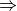

Counterpoise Correct¶
Code author: Robert M. Parrish
- cp(name[, func, check_bsse, molecule])[source]¶
The cp function computes counterpoise-corrected two-body interaction energies for complexes composed of arbitrary numbers of monomers.
Aliases : counterpoise_correct(), counterpoise_correction() Returns: (float) Counterpoise-corrected interaction energy in kcal/mol Psi variables: Caution
Some features are not yet implemented. Buy a developer a coffee.
- No values of func besides energy have been tested.
- Table print-out needs improving. Add some PSI variables.
Parameters: - name (string) –
'scf' || 'ccsd(t)' || etc.
First argument, usually unlabeled. Indicates the computational method to be applied to the molecule. May be any valid argument to energy(); however, SAPT is not appropriate.
- func (function) –
 energy
 || optimize || cbs
|| optimize || cbsIndicates the type of calculation to be performed on the molecule and each of its monomers. The default performs a single-point energy('name'), while optimize perfoms a geometry optimization on each system, and cbs performs a compound single-point energy. If a nested series of python functions is intended (see Function Intercalls), use keyword cp_func instead of func.
- check_bsse (boolean) –
'on' || 'off'
Indicates whether to additionally compute un-counterpoise corrected monomers and thus obtain an estimate for the basis set superposition error.
- molecule (molecule) –
h2o || etc.
The target molecule, if not the last molecule defined.
Examples : >>> # [1] counterpoise-corrected mp2 interaction energy >>> cp('dfmp2')